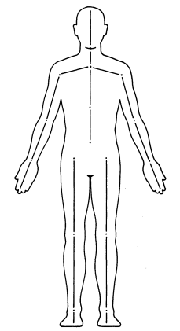
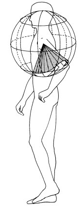
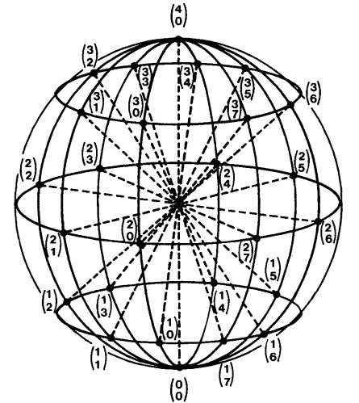
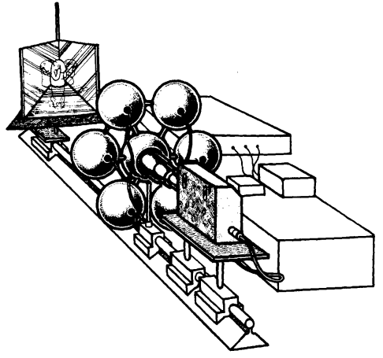
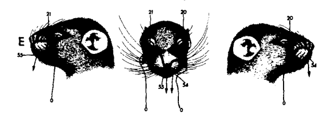

ESTUDIOS SOBRE LA CONDUCTA ANIMAL NO-HUMANA
El sistema de notación de movimiento Eshkol-Wachman
"[W]e have argued that the formal methods of behaviorism treat the individual as a dimensionless point and define the behavior of an organism in terms of its consequences. The problem with this system is that it ignores the form of behavior: it acknowledges that an organism can press a lever or run a maze, but is insensitive to the way in which the lever is pressed or the maze is run. This method has provided significant insights into sensory and perceptual organization, and has provided powerful models of learning, memory, cognition, and behavioral ecology. We do not seek to disparage these achievements. However, treating an organism as an idealized point tells us little about the behavior of that organism, sacrificing the very subject of investigation [...] the behavioral sciences could be advanced through the use of a relatively simple tool: formal movement notation. The adoption of a formal system for notating movement represents an important advance in the study of behavior because it allows the physical properties of behavior to be stated objectively and explicitly in a readily communicable form" (Jacobs et al., 1988, p. 15).
El estudio de la conducta qua movimiento del organismo o de sus partes por largo tiempo ha carecido de un sistema unificado y explícitamente conductual para definir y transcribir eventos conductuales como el acicalamiento facial de una rata. En cambio, normalmente se sigue trabajando con categorías funcionales, bien sea en términos de los microrruptores activados en una cámara operante o de las funciones biológicas cumplidas, o categorías motrices cualitativas e intuitivas. La ausencia de tal sistema formal le ha costado al estudio de la conducta toda una serie de problemas que se siguen arrastrando hasta la actualidad, pero que serán discutidos en otra entrada. A modo de resumen, la observación basada en categorías intuitivas sufre de problemas como la deriva del observador, el decaimiento del observador y la deriva ipsativa, mientras que las observaciones basadas en los efectos que tiene la conducta sobre el entorno (bien sea en términos de microrruptores o adaptación biológica) no dicen nada sobre la conducta en sí misma, sólo sobre sus consecuencias o las circunstancias que la organizan alrededor de esas consecuencias. El lector interesado puede referirse al trabajo de Jacobs et al. (1988) para saber más del tema.
Para poder formalizar la conducta como movimiento del organismo o de sus partes, primero hay que reconocer que cada token conductual se constituye de numerosos componentes. Tomando el ejemplo de una rata, el jalar una palanca requiere de los segmentos del brazo, la mano y la propia postura. Sin embargo, toda otra serie de tipos conductuales de la rata requieren de exactamente los mismos segmentos, pero los movimientos exhibidos por cada uno serían distintos al considerar cada tipo de manera individual. Por ello, cualquier sistema para formalizar la conducta debe ser capaz de representarla como un conjunto de segmentos articulados capaces de movimiento, donde el movimiento de cada segmento puede ser descrito de manera independiente del de otros para fines analíticos.
Jacobs et al. (1988) sugieren una transición al uso del sistema de notación de movimiento Eshkol-Wachman. A través de este sistema, los investigadores pueden descomponer una conducta en los movimientos de cada segmento corporal involucrado y representarlas con una precisión que permite mayor desconfirmación empírica que cualquier categoría intuitiva. Las bases de este sistema serán discutidas en la siguiente sección antes de introducir un ejemplo de aplicación al sistema al acicalamiento facial de los ratones realizado por Golani & Fentress (1985).
“Behavioral categories are useful to the extent that they conveniently organize behavior, can be consistently recognized, and serve as the basis of valid theory. If other, more simple, more accurate, or more useful behavioral types can be found, then traditional, intuitively derived categories must be abandoned. We should retain only those categories that allow us to detect lawful regularities in the behavioral stream. Those that fail to do so should be left to folk psychology” (Jacobs et al., 1988, p. 16).
El sistema de notación de movimiento Eshkol-Wachman (sistema E-W) fue originalmente una herramienta coreográfica que resultó productiva en el estudio descriptivo de la conducta animal. Este sistema separa el cuerpo en un conjunto de segmentos corporales, donde cada segmento es definido como cualquier parte del cuerpo entre dos articulaciones o una articulación y una extremidad. La Figura 1 ilustra una configuración posible de segmentos corporales en el ser humano.
Figura 1. Configuración posible de los segmentos corporales en un ser humano (Jacobs et al., 1988, p. 11).
A partir de esta división del cuerpo, una conducta se puede describir como el conjunto de trayectorias correspondientes al movimiento de cada segmento a lo largo del tiempo, definidas con respecto a una esfera imaginaria cuyo origen se sitúa en la articulación proximal (portadora). Alternativamente, la conducta puede describirse por las posiciones corporales producidas en términos de las coordenadas en la esfera imaginaria para cada segmento pertinente. La Figura 2 ejemplifica cómo la trayectoria del primer segmento del brazo izquierdo se mueve a lo largo de la esfera imaginaria desde el mismo punto de origen, la articulación proximal.
Figura 2. Una esfera Eshkol-Wachman (esfera E-W) centrada en la articulación del hombro izquierdo. En este caso, la articulación del hombro izquierdo es la articulación proximal y, por ende, el punto de origen. La trayectoria de este segmento corporal es representada por el movimiento de la articulación del codo en la superficie de la esfera, relativo a la articulación del hombro (Jacobs et al., 1988, p. 12).
La esfera imaginaria es marcada con coordenadas análogas a la latitud y longitud de un globo geográfico. Los círculos concéntricos pueden ser graduados de acuerdo al grado de resolución ameritado por el investigador (Jacobs et al., 1988). Esto quiere decir que el movimiento de un segmento corporal es descrito por los cambios en latitud y longitud en función del tiempo, representados sobre la superficie de la esfera relativo al punto de origen.
A modo de ejemplo, la Figura 3 ilustra una esfera imaginaria con una resolución de 45°. La esfera se organiza alrededor de dos planos ortogonales (mutuamente perpendiculares) que intuitivamente se separan como arriba/abajo e izquierda/derecha. Las líneas coordenadas se marcan en intervalos de 45° en cada plano de referencia. Esto tiene una repercusión importante a la hora de registrar. Cualquier cambio de posición en latitud o longitud donde el grado sea menor a 45°, es tomado como equivalente a la posición anterior. A modo de ejemplo, digamos que el segmento se encuentra en (2, 0) en t1 u.a. [T], y luego desciende 20°, en latitud, hacia (1,0) en t2 u.a [T]. Puesto que el cambio fue menor a 45°, se registraría como (2,0) tanto en t1 como en t2.
Figura 3. Una esfera E-W con líneas coordenadas marcadas en intervalos de 45°. Las posiciones en la superficie de la esfera se especifican por dos coordenadas que indican el movimiento en la vertical (latitud, número superior) y horizontal (longitud, número inferior) (Jacobs et al., 1988, p. 12).
Otra consecuencia del sistema E-W aplicado al ser humano como el expuesto previamente es que describe la mano entera como un único segmento. En consecuencia, el sistema E-W, como se presenta en este escenario hipotético, carece de resolución intrasegmentaria en la mano, o simplemente resolución digital: el sistema no puede describir cambios en las posiciones de las articulaciones de las falanges proximales, medias y distales. Cabe resaltar que esto no es una consecuencia necesaria del sistema E-W, sino una decisión de segmentación. En función de las necesidades del investigador, en caso de que la motricidad fina sea parte de la conducta de interés, el sistema puede ser modificado para tomar en consideración los dígitos.
Asimismo, puesto que el sistema E-W responde a segmentos corporales que se asumen rígidos, en el sentido de que no se deforman, este sistema es útil para la descripción de la conducta qua acción motora de organismos cuya morfología puede modelarse de acuerdo a segmentos articulados discretos. A modo ilustrativo, el sistema E-W puede describir exitosamente cambios en los segmentos corporales de los brazos y piernas de los primates, pero se ve limitado al extenderse hacia la cola de estos. De manera similar, ciertos invertebrados, como los anélidos, el cuerpo no se organiza en segmentos rígidos comparables a los de un ser humano, lo cual dificulta la aplicación directa del sistema. Esto implica que la elección del sistema E-W para modelar la conducta de un organismo debe hacerse bajo un entendimiento de su morfología y que el trabajo comparativo se ve metodológicamente limitado cuando se trata de organismos cuyas conductas ameritan formalismos distintos.
Por último, el sistema E-W no es sensible a las expresiones faciales (Jacobs et al., 1988), de manera similar a cómo carece de resolución digital.
Aunque se podría continuar analizando las limitaciones y posibilidades del sistema E-W, esta introducción debería ser suficiente para contextualizar al lector. En la siguiente sección se introducirá un ejemplo de una aplicación del sistema E-W al acicalamiento facial en las ratas por Golani & Fentress (1985).
Golani & Fentress (1985) emplearon el sistema E-W para formalizar las conductas de acicalamiento facial en ratones neonatos híbridos DBAJ2-wild desde el día 0 postnatal hasta el día 14. Los investigadores emplearon puntos de tinta china para marcar las articulaciones del hombro, codo y muñecas de las crías, de tal forma que se pudieran delimitar los segmentos corporales de interés y rastrear las trayectorias que estos exhibieron en las cintas de vídeo tomadas.
El equipo de filmación, ilustrado en la Figura 4, contaba con 6 luces estroboscópicas. Este se posicionó en el mismo eje que la cámara de espejos, donde el ratón era ubicado a través de un hueco en el piso, para capturar los movimientos de sus patas delanteras en relación a su rostro.
El experimento no requirió de segmentar el cuerpo entero en diferentes miembros como el modelo hipotético de un ser humano ilustrado en la sección anterior. En cambio, solo requirió segmentar las patas delanteras, cuello y la cabeza, tratándolos como líneas rectas (ejes) y el cuerpo como un sistema de ejes articulados. De la mano con lo descrito previamente, Golani & Fentress (1985) representaron el movimiento de cada eje individual de longitud constante como un círculo (o parte de un círculo) a lo largo de una esfera imaginaria.
Figura 4. Equipo de grabación (Golani & Fentress, 1985, p. 531).
En esta sección nos enfocaremos únicamente en los resultados de la trayectoria de las patas delanteras, aunque el estudio también elabora en los movimientos del cuello y la cabeza, así como también contiene una discusión de experimentos.
La Figura 5 ilustra la vista frontal del rostro de la rata, donde las líneas representan las trayectorias de las patas delanteras. Las líneas están marcadas con números que representan los fotogramas correspondientes a cada punto de interés, lo cual facilita entender dónde comenzó y terminó el movimiento. Algo claramente visible y notado por los investigadores es que durante las primeras 100-125 horas postnatales las patas delanteras fallan en hacer contacto con el rostro de uno o ambos lados (Figura 5A), fenómeno que desaparece a partir del quinto día postnatal.
Otro fenómeno observado es que durante el primer periodo de desarrollo las patas son desplazadas excesivamente tanto hacia arriba como hacia los lados, ergo descendiendo una distancia relativamente larga antes de establecer contacto con el rostro. Esto se observa tanto en la Figura 5B como 5C y 5D. 5B representa una ruta de contacto espacialmente larga, pues las patas siguen una trayectoria relativamente larga en relación a 5C y 5D. Los autores llaman ‘overshooting’ a este fenómeno, y regresa durante el segundo periodo de desarrollo entre las 100 y 200 horas postnatales, aunque su componente vertical se reduce significativamente, por lo cual el overshooting solo continúa manifestándose en el componente horizontal. Los autores afirman que el overshooting desaparece luego de las 200 horas postnatales.
La Figura 5E representa una forma de overshooting donde la pata delantera puede ser representada como una trayectoria vertical hasta alcanzar el nivel del hocico, momento en que las patas son movidas horizontalmente contrario al rostro antes de desplazarse horizontalmente hacia la punta del hocico. En este caso, el overshooting es completamente horizontal, y desaparece a partir de las 150 horas postnatales.
Otro tipo de toque se ilustra en las Figuras 5F, 5G y 5H. Todos tienen en común que comienzan con la pata delantera alzándose hasta el hocico, donde contactan antes de moverse a los lados en dirección contraria al rostro. Posteriormente, los tres difieren en que 5F y 5G restablecen contacto con la punta del hocico, mientras que 5H repite el movimiento a los lados antes de hacer contacto con el rostro. Esta forma de acicalamiento desaparece posterior a las 200 horas postnatales.
Figura 5. Trayectorias de las patas delanteras (líneas ininterrumpidas) y trayectorias de contacto (líneas interrumpidas) en ejemplos específicos de acicalamiento, trazados a partir de videos a 100 fps. Los numerales indican números sucesivos de fotogramas a lo largo de la trayectoria. Pares de números se refieren a la duración en fotogramas de la cesación del movimiento (Golani & Fentress, 1985, p. 535).

Posterior a las 200 horas postnatales, el acicalamiento del rostro adquiere una forma más estable representada en la Figura 6. Este consiste de trayectorias ascendentes hacia el rostro y luego a lo largo de este al borde del contacto. La parte final de la ruta ascendente puede implicar contacto.
Figura 6. Vista lateral de las trayectorias (líneas delgadas) y rutas de contacto (líneas gruesas) con la pata delantera ejecutados durante la fase 3 del experimento, entre las 200 y 350 horas postnatales (Golani & Fentress, 1985, p. 539).
Lo que este estudio ilustra es la forma en que se puede descomponer una conducta de interés, como el acicalamiento, en sus componentes cinéticos para describir con mayor precisión la dimensión motriz. Esta descripción puede ser, a su vez, acompañada por una discusión de su función biológica.
Gracias a la precisión de estas trayectorias, es posible desconfirmar empíricamente las observaciones con otra muestra de ratones de la misma clase o con ratones distintos con fines comparativos. Asimismo, una vez se sabe con precisión la forma de la conducta, no solo se puede hablar significamente sobre su desarrollo ontogenético como este estudio lo hace, sino que también se puede facilitar toda otra serie de estudios de índole ‘causal’. A modo de ejemplo, una vez se entiende la evolución del acicalamiento facial en la ontogenia, es posible estudiar las circunstancias necesarias que facilitan este desarrollo: ¿qué tejidos nerviosos, genes o estímulos ambientales pueden ser modificados para observar cambios en las trayectorias de las patas delanteras durante el acicalamiento facial? Estas son preguntas que no se pueden hacer significativamente sin una descripción precisa de los movimientos exactos.
En entradas ulteriores se discutirán otras aplicaciones del sistema E-W, así como también algunas razones para moverse hacia modelos formales como este y la forma en que ha sido empleado para nuevas propuestas sobre el desarrollo y la forma de la conducta (Golani & Kafkafi, 2025).
Golani, I., & Fentress, J. C. (1985). Early ontogeny of face grooming in mice. Developmental Psychobiology, 18(6), 529-544. https://doi.org/10.1002/dev.420180609
Golani, I., & Kafkafi, N. (2025). On growth and form of animal behavior. Frontiers in Integrative Neuroscience, 18. https://doi.org/10.3389/fnint.2024.1476233
Jacobs, W. J.,Blackburn, J. R., Buttrick, M., Harpur, T. J., Kennedy,D., Mana, M. J., MacDonald, M. A., McPherson, L. M., Paul, D., & Pfaus, J. G. (1988). Observations. Psychobiology, 16(1), 3-19. https://doi.org/10.3758/BF03327295
Freddy J. Molero-Ramírez
fmolero@mail.uniatlantico.edu.co